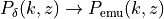
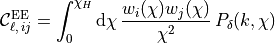
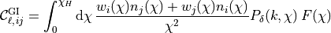
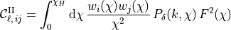
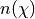
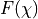
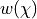
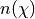
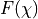
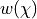

Weak Lensing Power Spectrum¶
One can use the 3D matter power spectrum to calculate the EE, GI and II power spectra for weak lensing. For this particular application, . The EE, GI and II power spectra are given respectively by:



where  is the comoving radial distance and  is the (tomographic) redshift distribution. Please see paper below for full definition of  and .
is the comoving radial distance and  is the (tomographic) redshift distribution. Please see paper below for full definition of  and .